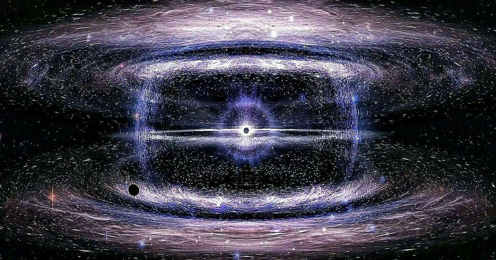

Big bang
The universe originated from a point of infinite density and
temperature
about 13.8 billion years ago. The universe began
expanding from a very
dense and hot state and this expansion
continues to this day.
The Universe Arose
All ideas related to the formation of the universe in its first
moments stem from conjecture, due to our lack of
knowledge of the properties of the elementary particles formed in
the beginning with very high energy, and
their energy exceeds what we study today in special particle
accelerators. The views of researchers and scientists in
this field differ greatly. There are various concepts and models
such as the initial state according to Hartle-Hawking,
as well as the proposed string topography models, the cosmic
inflation model, the string gas concept, and others.
Some of these concepts converge with others, and some do not agree
with another concept.
planck period
The Planck period is the time period from 10−43 to 10−35 seconds after
the Big Bang, during which the temperature drops from 1032 to 1027
Kelvin.
10-43 seconds This is known as the Planck time period, and at this
moment the force of gravity separates from the other three forces,
which are collectively known as the electron-nuclear force.
A complete theory of quantum gravity, such as string theory,is
supposed to explain all of these very early events, but the
explanations provided by string theory are still limited.
The diameter of the universe at this moment in the universe is
estimated to be 10-35 m, which is known as the Planck length. 10-36
seconds The strong interaction separates from the electron-nuclear
force, so that the latter consists of only two types of forces: the
electromagnetic interaction and the weak interaction.
The elementary particles that accompany and participate in the strong
interaction are usually heavier than the particles that accompany the
other two forces, so they are thought to form and condense at an
earlier stage
The period of great unification
This period covers a period of time from 10−35 to 10−12 seconds after
the Big Bang. The temperature is estimated to have dropped from 1027 K
to 1015 K. In this period of time, from 10−35 seconds to 10−33, space
is thought to have expanded to a volume of 10−32 meters to 10−22
meters. This period is very important for the creation of matter, as
the behavior of the electromagnetic interaction and the weak
interaction forces is identical for matter and antimatter, as these
two forces are combined and should behave as a single force.
Grand Unified Theories suggest that this combined state of these two
forces allows the formation of heavy particles called Higgs bosons.
And that particle interactions lead to the formation of more matter
than antimatter. In the later stages when separation occurs, it is
impossible to ensure the formation of matter with a majority that
exceeds antimatter, because the meeting of each particle with its
opposite leads to their annihilation, or in other words, their
transformation again into energy.

Ai photo
swelling stage
The Great Inflation occurred between 10−36 seconds and 10−32 seconds
after the Big Bang.
We do not know exactly when inflation occurred.
> is assumed
that the universe during inflation was flat, that is, the curvature of
metric space was flat, forming an evenly distributed, rapidly
expanding phase, during which the first building blocks of the
universe were formed.
Some of the energies of the enormous number of photons were converted
into unstable particles such as quarks and heavy hadrons, which
rapidly decayed.
According to one theory, the universe was relatively cold and empty
before it entered inflation, and that the intense heat and high energy
of the early stages of the Big Bang arose as a result of the phase
change that accompanied the end of inflation.
Quark phase
Between 10−12 seconds and 10−6 seconds after the Big Bang.
It is believed that with the breaking of the symmetry of the weak
force after the end of the weak interaction phase, elementary
particles began to gain mass through the Higgs model, according to
which the Higgs boson also gains mass (previously assumed and
officially confirmed in 2012 by measurements of the Large Hadron
Collider).
[4] 6[. [5] At that stage, all of the fundamental interactions, namely
gravity, electromagnetism, the strong interaction, and the weak
interaction, have taken on their specifications.
However, the temperature of the universe is still too high for quarks
to combine with each other to form hadrons.
The forces of the Standard Model have been reorganized due to
"increasingly low temperatures": the Higgs interactions and the weak
interaction are rearranged into the massive Higgs boson H0, the weak
force carried by the massive W+, W-, and Z0 bosons, and
electromagnetism carried by photons.
Mass. The Higgs field has a non-zero vacuum expectation value, making
fermions massive.
The energies are so high that quarks cannot combine to form hadrons,
forming instead quark-gluon plasma.
leptonic phase
Between 1 second and 3 minutes after the Big Bang.
Most of the
hadrons and antihadrons annihilate each other at the end of the hadron
phase and turn into energy, leaving behind leptons and antileptons to
form the mass of the universe.
About three seconds after the Big Bang, the temperature of the
universe drops to the point where no new pairs of leptons and
antileptons can be generated, and most of the leptons and antileptons
annihilate each other, leaving a small number of leptons behind.

Photon stage
Between 3 minutes and 380,000 years.
After most leptons and anti-leptons have annihilated at the end of the
lepton phase, the energy of the universe becomes full of photons and
these photons begin to interact from time to time with charged protons
and electrons and perhaps with some light nuclei and this continues
for the next 380,000 years.
Nucleosynthesis
Between 3 minutes and 20 minutes after the Big Bang.
During the photon phase, the temperature of the universe drops due to
rapid expansion so that atoms can form (i.e. the nuclei of atoms gain
orbiting electrons and become electrically neutral).
Protons begin to combine with neutrons by nuclear fusion.
This happens within 17 minutes after which the temperature of the
universe drops due to expansion so that nuclear fusion can no longer
continue.
At that time, a mass of hydrogen has been formed, three times as much
as helium-4, with traces of light element nuclei such as lithium.
Matter Dominates After 70,000 Years
The density of matter(light atomic nuclei) at this time and photons
become equal.
The density of matter varies from place to place, albeit slightly.
Restore the correlation between 310,000 – 240,000 years A WMAP
satellite image showing a full-sky survey of the cosmic background
radiation and spots Yellow And red are the centers of condensation of
matter in which hydrogen and helium atoms begin to form and the
density of the universe continues to decrease due to expansion.
Museum of the connection between 310,000 - 240,000 years
Before decoupling, most of the photons in the universe interacted with
electrons and protons in a dense medium of baryons and photons.
The universe was dark and light was almost nonexistent.
Baryonic matter consisted of ionized plasma and transformed into
neutral atoms after capturing electrons during the re-bonding phase
and emitting the photons that make up the cosmic microwave background
radiation. When the photons decoupled, the universe became
transparent.
Up until that time, the emitted radiation had a wavelength of 21
centimeters and was emitted by hydrogen atoms.
There are now efforts to measure these radiations, as they can be used
to obtain a more accurate picture of the early universe than we can
get by measuring the microwave background radiation.
dark period
Before decoupling, most of the photons in the universe interacted with
electrons and protons in a dense medium of baryons and photons.
The universe was dark and light was almost nonexistent.
Baryonic
matter consisted of ionized plasma and transformed into neutral atoms
after capturing electrons during the re-bonding phase and emitting the
photons that make up the cosmic microwave background radiation.
When the photons decoupled, the universe became transparent.
Up until that time, the emitted radiation had a wavelength of 21
centimeters and was emitted by hydrogen atoms.
There are now
efforts to measure these radiations, as they can be used to obtain a
more accurate picture of the early universe than we can get by
measuring the microwave background radiation.
The formation of the universe
According to the Big Bang model, the formation of cosmic structures
begins with small structures before the formation of large ones.
The first structures to take the form of star clusters in primitive
galaxies and so-called quasars, which are considered to be very
luminous active galaxies, as well as star class III.
Before that period, the evolution of the universe can be understood by
linear perturbation theory, i.e.
considering that all structures were formed from small differences in
the density of particle distribution, as their distribution was
initially almost equal throughout the nascent universe.
Models of these stages can also be studied by computer simulation.
Then the stage of forming complex non-linear structures began.
Simulations of these successive stages are also conducted by
large computers to calculate models that combine the interaction
between billions of particles.
What makes us reassured about the
validity of one model over another is comparing the results of the
calculated models with the structure of the universe as we see it.
After the assumption of the existence of dark matter during the
seventies of the last century - because visible matter alone in the
universe cannot form galaxies and galaxy clusters as we see them today
- calculations were made assuming the existence of what was called
"dark matter".
Indeed, the results of the calculations with computer simulations
showed that dark matter plays a major role in the formation of
galaxies and galaxy clusters.
Research is now underway to discover this dark matter practically
(which, according to the assumption, is: particles that have gravity
but weak interaction with visible matter, and do not absorb light or
emit light).
Reionization: 150 million years to 1 billion years
Main article: Reionization Main article: Reionization The first
quasars (quasars) formed from gravitational collapse, where the
radiation energy from the collapse reionized hydrogen in the
surrounding universe.
Scientists believe that a family of stars, along with quasars,
contributed to the ionization of hydrogen.
Family III stars are hot and active in emitting ultraviolet radiation
that ionizes hydrogen.
The epoch of hydrogen reionization in the universe occurred between
150 million and 1 billion years after the Big Bang, and since then the
entire universe has been filled with plasma.
Star formation
The first stars to form were the Class III stars, made up mainly of
hydrogen and helium, which were produced during the Big Bang (with
very small traces of lithium).
These stars were very large and hot because they consumed hydrogen and
helium so much that they began to convert the lighter elements that
were formed during the Big Bang (hydrogen and helium) into heavier
elements.
However, we have not yet been able to observe Class III stars from
this early in the universe. [9]
Galaxy formation
Large masses of matter gather to form a galaxy.
It is believed that this is how star family II stars are formed,
followed by star family I in later times.
The star family I (including the Sun) is characterized by its
formation of hydrogen and helium in addition to a relatively large
proportion of heavy elements, created in the hearts of the stars that
preceded it from the star families III and II, and then those families
that preceded it exploded in the form of supernovae and scattered
those elements into space.
The Johannes Schiedler project was able to observe the quasar CFHQS
1641+3755 at a distance of 12.7 billion light-years.
[10] When the universe was 7% of its current age. On July 11, 2007,
Richard Ellis and his group from the Institute of Technology in
Bassadena were able to observe 6 galaxies in which stars are forming
at a distance of 13.2 billion light-years using the Keck II telescope
located on the island of Mauna Kea, meaning that they formed when the
universe was only 500 million years old. [11] So far, only 10 of those
have been observed.
[12] The Hubble Space Telescope image of the very deep region shows a
number of small galaxies intertwining to form larger galaxies 13
billion light-years away, when the universe was 5% of its current
age.
[13] According to the new science called nucleocosmochronology, the
thin disk of the Milky Way is considered to have formed 1.8 ± 8.3
billion years ago. [14]
Formation of groups and clusters of galaxies
Gravitational forces pull galaxies together to form galaxy groups,
clusters, and superclusters.
Solar system after 8 billion years
Then bodies were formed that had the dimensions of the solar system,
and our sun is considered a late generation star as it contains the
debris of stars from previous generations of stars, and the sun was
formed approximately 5 billion years ago or was formed between 9 - 8
billion years after the Big Bang.
State of the Universe Today: 13.8 Billion Years Later
The best measurements show that the universe is 13.8 billion years old
since the Big Bang.
Since observations show that the universe is
expanding and expanding at an increasing rate, it seems that
superclusters of galaxies are the largest structures in the universe.
The current rapid expansion of the universe prevents the formation of
larger structures due to gravity.
الانفجار العظيم
نشأ الكون من نقطة ذات كثافة ودرجة حرارة لا نهائية
منذ
حوالي 13.8 مليار سنة. بدأ الكون في التوسع من نقطة الصفر
حالة كثيفة وساخنة ويستمر هذا التوسع حتى يومنا هذا.
نشأ الكون
جميع الأفكار المتعلقة بتكوين الكون في لحظاته الأولى تنبع من التخمين، وذلك بسبب افتقارنا إلى ذلك
معرفة خصائص الجسيمات الأولية المتكونة في البداية ذات طاقة عالية جداً
وطاقتها تفوق ما ندرسه اليوم في مسرعات الجسيمات الخاصة. آراء الباحثين والعلماء في
هذا المجال يختلف بشكل كبير. هناك مفاهيم ونماذج مختلفة مثل الحالة الأولية عند هارتل هوكينج،
وكذلك النماذج الطبوغرافية الأوتارية المقترحة، ونموذج التضخم الكوني، ومفهوم الغاز الأوتار، وغيرها.
وبعض هذه المفاهيم يتقارب مع البعض الآخر، وبعضها لا يتفق مع مفهوم آخر.
فترة بلانك
فترة بلانك هي الفترة الزمنية من 10−43 إلى 10−35 ثانية بعد الانفجار الكبير، والتي تنخفض خلالها درجة الحرارة من 1032 إلى 1027 كلفن.
10-43 ثانية وهذا ما يعرف بفترة بلانك الزمنية، وفي هذه اللحظة تنفصل قوة الجاذبية عن القوى الثلاث الأخرى، والتي تعرف مجتمعة بالقوة الإلكترونية النووية.
من المفترض أن تفسر النظرية الكاملة للجاذبية الكمية، مثل نظرية الأوتار، كل هذه الأحداث المبكرة جدًا، لكن التفسيرات التي تقدمها نظرية الأوتار لا تزال محدودة.
ويقدر قطر الكون في هذه اللحظة في الكون بـ 10-35 م، وهو ما يعرف بطول بلانك. 10-36 ثانية ينفصل التفاعل القوي عن القوة الإلكترونية النووية، بحيث تتكون الأخيرة من نوعين فقط من القوى: التفاعل الكهرومغناطيسي، والتفاعل الضعيف.
إن الجسيمات الأولية التي تصاحب وتشارك في التفاعل القوي عادة ما تكون أثقل من الجسيمات التي تصاحب القوتين الأخريين، لذا يُعتقد أنها تتشكل وتتكاثف في مرحلة مبكرة
فترة التوحيد الكبير
تغطي هذه الفترة زمنا يمتد من 10-35 إلى 10-12 ثانية بعد الانفجار العظيم. يقدر انخفاض درجة الحرارة في هذه الفترة من 1027 كلفن إلى 1015 كلفن
غي هذه الفترة من الزمن الممتدة من 10-35 ثانية و 10-33 من المعتقد أن يتمدد الفضاء الكوني إلى حجم يقدر ب : 10-32 متر إلى 10-22 متر. هذه الفترة على غاية من الأهمية بالنسبة لتخليق المادة حيث يكون سلوك التآثرالكهرومغناطيسي وقوى التآثر الضعيف متماثلا بالنسبة للمادة والمادة المضادة، حيث أن هاتين القوتين مندمجتين ومن المفروض أن تسلكان سلوك قوة وحيدة. وتقترح نظريات التوحيد الكبرى أن هذه الحالة الاندماجية لهاتين القوتين تسمحان بتكوين جسيمات ثقيلة تسمى بوزونات هيجز.وأن التفاعلات الجسيمية تؤدي إلى تشكل المادة أكثر من المادة المضادة. في المراحل اللاحقة حين يحدث الانفصال، يكون من المتعذر تأمين تكون المادة بأغلبية تفوق المادة المضادة، ذلك لأن التقاء كل جسيم لنقيضه يؤدي إلى فنائهما، أو بمعنى أصح تحولهما ثانيا إلى طاقة.
صور ذكاء اصطناعي
مرحلة الانتفاخ
تضخم مفاجيء عظيم inflation بين 10-36 ثانية و 10-32 ثانية بعد الانفجار العظيم.
لا نعرف بالضبط الوقت الذي حدث فيه الانتفاخ. ويفترض أن الكون خلال التضخم كان مسطحا، أي أن انحناء الفضاء المتري كان مستويا بحيث يشكل طورا متساوي التوزيع متوسعا بسرعة فائقة، تتشكل خلالها
جسيمات التكوين البنائي الكوني الأولى. وتتحول بعض طاقات الفوتونات الهائلة العدد إلى جسيمات غير مستقرة مثل الكواركات وهادرونات ثقيلة تتحلل سريعا.
وطبقا لأحد التصورات أن الكون كان باردا وفارغا نسبيا قبل دخوله مرحلة الانتفاخ، وأن الحرارة الشديدة والطاقة العالية المصاحبة للمراحل الأولى للانفجار العظيم قد نشأت نتيجة تغير الطور الذي صاحب نهاية الانتفاخ.
مرحلة الكواركات
بين 10-12 ثانية و 10-6 من الثانية بعد الانفجار العظيم.
اكتساب 5تا كن ي لموذج اليجر والذي مقاف كب بزون ا ات الولية في
أيضا(المفترض سابقا وتم تأكيد وجوده رسميا عام 2012 بواسطة قياسات مصادم الهادرونات الكبير) .[4]
[6]. [5] وفي تلك المرحلة يكون كل من التاثرات الأساسية وهي الجاذبية ، والتاثر الكهرومغناطيسي ، والتآثر القوي ، والتآثر الضعيف قد اتخذت مواصفاتها. إلا أن درجة حرارة الكون تكون لا زالت عالية جدا حيث لا يمكن للكواركات الاتحاد مع بعضها مكونة هادرونات.
أعادت قوي النموذج القياسي تنظيمها بسبب "درجات الحرارة المتزايدة في الانخفاض": أعيد ترتيب تفاعلات هيغز والتآثر الضعيف إلى هيجز بوزون H0 الهائل ، والقوة الضعيفة التي تحملها بوزونات W+ و W- و Z0 الضخمة، والكهرومغناطيسية التي تحملها فوتونات عديمة الكتلة. يمتلك حقل هيغز قيمة توقع فراغ غير صفرية، مما يجعل الفرميونات ضخمة. الطاقات عالية جدًا بحيث لا يمكن للكواركات أن تلتحم مكونة هادرونات ، وتشكل بدلاً من ذلك بلازما كوارك-غلوون.
المرحلة اللبتونية
بين ثانية واحدة وثلاث دقائق بعد الانفجار العظيم.
تفنى معظم الهادرونات والهادرونات المضادة بعضها البعض في نهاية مرحلة الهادرون وتتحول إلى طاقة، تاركة وراءها اللبتونات واللبتونات المضادة لتكوين كتلة الكون.
بعد حوالي ثلاث ثوانٍ من الانفجار العظيم، تنخفض درجة حرارة الكون إلى الحد الذي لا يمكن معه توليد أزواج جديدة من اللبتونات واللبتونات المضادة، وتفنى معظم اللبتونات واللبتونات المضادة بعضها البعض، تاركة وراءها عددًا صغيرًا من اللبتونات.
مرحلة الفوتون
بين ثانية واحدة وثلاث دقائق بعد الانفجار العظيم.
تفنى معظم الهادرونات والهادرونات المضادة بعضها البعض في نهاية مرحلة الهادرون وتتحول إلى طاقة، تاركة وراءها اللبتونات واللبتونات المضادة لتكوين كتلة الكون.
بعد حوالي ثلاث ثوانٍ من الانفجار العظيم، تنخفض درجة حرارة الكون إلى الحد الذي لا يمكن معه توليد أزواج جديدة من اللبتونات واللبتونات المضادة، وتفنى معظم اللبتونات واللبتونات المضادة بعضها البعض، تاركة وراءها عددًا صغيرًا من اللبتونات.
التخليق النووي
بين 3 دقائق و20 دقيقة بعد الانفجار العظيم.
أثناء مرحلة الفوتون تنخفض درجة حرارة الكون بسبب التوسع السريع بحيث يمكن للذرات أن تتشكل (أي أن نوى الذرات تكتسب إلكترونات مدارية وتصبح محايدة كهربائيا).
تبدأ البروتونات في الاتحاد مع النيوترونات عن طريق الاندماج النووي.
يحدث هذا في غضون 17 دقيقة وبعدها تنخفض درجة حرارة الكون بسبب التوسع بحيث لا يمكن للاندماج النووي أن يستمر.
في ذلك الوقت تكون كتلة من الهيدروجين قد تشكلت، ثلاثة أضعاف كتلة الهيليوم-4، مع آثار من نوى العناصر الخفيفة مثل الليثيوم.
المادة تسيطر بعد 70 ألف سنة
تصبح كثافة المادة (النوى الذرية الخفيفة) في هذا الوقت والفوتونات متساوية.
تختلف كثافة المادة من مكان لآخر، ولو بشكل طفيف.
استعادة الارتباط بين 310,000 – 240,000 سنة صورة قمر صناعي من WMAP تظهر مسحًا كاملاً للسماء للإشعاعات الخلفية الكونية والبقع الصفراء والحمراء هي مراكز تكاثف المادة حيث تبدأ ذرات الهيدروجين والهيليوم في التكون وتستمر كثافة الكون في الانخفاض بسبب التوسع.
استعاده العلاقه بين 310,000 - 240,000 سنة
قبل الانفصال، تفاعلت معظم الفوتونات في الكون مع الإلكترونات والبروتونات في وسط كثيف من الباريونات والفوتونات.
كان الكون مظلمًا وكان الضوء غير موجود تقريبًا.
تتكون المادة الباريونية من بلازما متأينة وتحولت إلى ذرات محايدة بعد التقاط الإلكترونات أثناء مرحلة إعادة الارتباط وإطلاق الفوتونات التي تشكل إشعاع الخلفية الكونية الميكرويفي. عندما انفصلت الفوتونات، أصبح الكون شفافًا.
حتى ذلك الوقت، كان للإشعاع المنبعث طول موجي يبلغ 21 سنتيمترًا وكان ينبعث من ذرات الهيدروجين.
هناك الآن جهود لقياس هذه الإشعاعات، حيث يمكن استخدامها للحصول على صورة أكثر دقة للكون المبكر مما يمكننا الحصول عليه من خلال قياس إشعاع الخلفية الكونية الميكرويفي.
فترة مظلمة
قبل الانفصال، تفاعلت معظم الفوتونات في الكون مع الإلكترونات والبروتونات في وسط كثيف من الباريونات والفوتونات.
كان الكون مظلمًا وكان الضوء غير موجود تقريبًا.
تتكون المادة الباريونية من بلازما متأينة وتحولت إلى ذرات محايدة بعد التقاط الإلكترونات أثناء مرحلة إعادة الارتباط وإطلاق الفوتونات التي تشكل إشعاع الخلفية الكونية الميكرويفي.
عندما انفصلت الفوتونات، أصبح الكون شفافًا.
حتى ذلك الوقت، كان للإشعاع المنبعث طول موجي يبلغ 21 سنتيمترًا وكان ينبعث من ذرات الهيدروجين.
هناك الآن جهود لقياس هذه الإشعاعات، حيث يمكن استخدامها للحصول على صورة أكثر دقة للكون المبكر مما يمكننا الحصول عليه من خلال قياس إشعاع الخلفية الكونية الميكرويفي.
تشكل الكون
وبحسب نموذج الانفجار العظيم فإن تشكل البنيات الكونية يبدأ ببنيات صغيرة قبل تشكل البنيات الكبيرة.
وكانت أولى البنيات التي أخذت شكل العناقيد النجمية في المجرات البدائية وما يسمى بالكوازارات والتي تعتبر من المجرات النشطة المضيئة جدا وكذلك نجوم الفئة الثالثة.
وقبل تلك الفترة يمكن فهم تطور الكون من خلال نظرية الاضطرابات الخطية أي
اعتبار أن كل البنيات تكونت من فروق صغيرة في كثافة توزيع الجسيمات حيث كان توزيعها في البداية متساويا تقريبا في جميع أنحاء الكون الناشئ.
ويمكن أيضا دراسة نماذج هذه المراحل عن طريق المحاكاة الحاسوبية.
ثم بدأت مرحلة تشكل البنيات المعقدة غير الخطية.
وتتم أيضا محاكاة هذه المراحل المتعاقبة بواسطة حواسيب ضخمة لحساب نماذج تجمع بين التفاعل بين مليارات الجسيمات.
وما يجعلنا مطمئنين إلى صحة نموذج على آخر هو مقارنة نتائج النماذج المحسوبة ببنية الكون كما نراها.
وبعد افتراض وجود المادة المظلمة خلال سبعينيات القرن الماضي ـ لأن المادة المرئية وحدها في الكون لا تستطيع أن تشكل المجرات وتجمعات المجرات كما نراها اليوم ـ أجريت حسابات على افتراض وجود ما أطلق عليه "المادة المظلمة".
وبالفعل أظهرت نتائج الحسابات بالمحاكاة الحاسوبية أن المادة المظلمة تلعب دوراً رئيسياً في تشكل المجرات وتجمعات المجرات.
والآن تجري الأبحاث لاكتشاف هذه المادة المظلمة عمليا (وهي حسب الافتراض: جسيمات لها جاذبية ولكنها تتفاعل بشكل ضعيف مع المادة المرئية، ولا تمتص الضوء ولا تصدره).
إعادة التأين: من 150 مليون سنة إلى مليار سنة
المقال الرئيسي: إعادة التأين المقال الرئيسي: إعادة التأين تشكلت أول أشباه النجوم (الكوازارات) من الانهيار الجاذبي، حيث أعادت طاقة الإشعاع من الانهيار تأين الهيدروجين في الكون المحيط.
يعتقد العلماء أن عائلة من النجوم، إلى جانب أشباه النجوم، ساهمت في تأين الهيدروجين.
نجوم العائلة الثالثة ساخنة ونشطة في إصدار الأشعة فوق البنفسجية التي تؤين الهيدروجين.
حدث عصر إعادة تأين الهيدروجين في الكون بين 150 مليون ومليار سنة بعد الانفجار العظيم، ومنذ ذلك الحين امتلأ الكون بالكامل بالبلازما.
تشكل النجوم
كانت النجوم الأولى التي تشكلت هي نجوم الفئة الثالثة، والتي تتكون بشكل أساسي من الهيدروجين والهيليوم، والتي تم إنتاجها أثناء الانفجار العظيم (مع آثار صغيرة جدًا من الليثيوم).
كانت هذه النجوم كبيرة جدًا وساخنة لأنها استهلكت الهيدروجين والهيليوم كثيرًا حتى أنها بدأت في تحويل العناصر الأخف التي تشكلت أثناء الانفجار العظيم (الهيدروجين والهيليوم) إلى عناصر أثقل.
ومع ذلك، لم نتمكن بعد من ملاحظة نجوم الفئة الثالثة من هذه المرحلة المبكرة من الكون. [9]
تشكل المجرة
تتجمع كتل كبيرة من المادة لتكوين المجرة.
ويعتقد أن هذه هي الطريقة التي تتكون بها نجوم العائلة النجمية الثانية، ثم تلاها العائلة النجمية الأولى في أوقات لاحقة.
وتتميز العائلة النجمية الأولى (بما في ذلك الشمس) بتكوينها للهيدروجين والهيليوم بالإضافة إلى نسبة كبيرة نسبيًا من العناصر الثقيلة، والتي تكونت في قلوب النجوم التي سبقتها من العائلتين النجميتين الثالثة والثانية، ثم انفجرت تلك العائلات التي سبقتها على شكل مستعرات أعظمية وتناثرت تلك العناصر في الفضاء.
وتمكن مشروع يوهانس شيدلر من رصد الكوازار CFHQS 1641+3755 على مسافة 12.7 مليار سنة ضوئية.
[10] عندما كان عمر الكون 7% من عمره الحالي. في 11 يوليو 2007، تمكن ريتشارد إليس ومجموعته من معهد التكنولوجيا في باسادينا من ملاحظة 6 مجرات تتشكل فيها النجوم على مسافة 13.2 مليار سنة ضوئية باستخدام تلسكوب كيك الثاني الواقع على جزيرة ماونا كيا، مما يعني أنها تشكلت عندما كان عمر الكون 500 مليون سنة فقط. [11] حتى الآن، تم ملاحظة 10 منها فقط.
[12] تُظهر صورة تلسكوب هابل الفضائي للمنطقة العميقة جدًا عددًا من المجرات الصغيرة تتشابك لتشكل مجرات أكبر على بعد 13 مليار سنة ضوئية، عندما كان عمر الكون 5٪ من عمره الحالي.
[13] وفقًا للعلم الجديد المسمى علم التأريخ النووي الكوني، يُعتقد أن القرص الرقيق لمجرة درب التبانة قد تشكل منذ 1.8 ± 8.3 مليار سنة. [14]
تكوين مجموعات وعناقيد المجرات
تعمل قوى الجاذبية على جذب المجرات معًا لتشكيل مجموعات مجرية وعناقيد وعناقيد مجرية فائقة.
النظام الشمسي بعد 8 مليار سنة
ثم تشكلت أجسام لها أبعاد النظام الشمسي، وتعتبر شمسنا من نجوم الجيل المتأخر لأنها تحتوي على حطام نجوم من أجيال سابقة من النجوم، وقد تشكلت الشمس منذ ما يقرب من 5 مليار سنة أو تشكلت ما بين 9 - 8
مليار سنة بعد الانفجار العظيم.
حالة الكون اليوم: بعد 13.8 مليار سنة
تشير أفضل القياسات إلى أن عمر الكون يبلغ 13.8 مليار سنة منذ الانفجار العظيم.
ونظرًا لأن الملاحظات تشير إلى أن الكون يتوسع ويتوسع بمعدل متزايد، فيبدو أن مجموعات المجرات العملاقة هي أكبر الهياكل في الكون.
ويمنع التوسع السريع الحالي للكون تكوين هياكل أكبر بسبب الجاذبية.